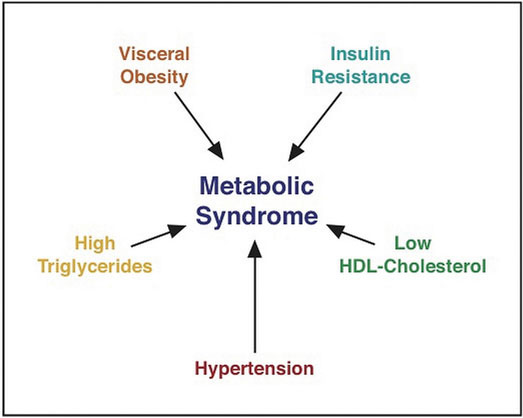

Diabetes is one of the top three diseases in America. It affects millions of people and causes tens of thousands of deaths each year. Diabetes is a metabolic disease of insulin deficiency and glucose over-sufficiency. Like other diseases, genetics, nutrition, environment, and lifestyle are all involved in determining a person’s risk for developing diabetes. One sure way to decrease your chances of getting diabetes is to maintain an optimal body weight by adhering to a diet that is balanced in carbohydrate, fat, and protein intake. There are three different types of diabetes: Type 1 diabetes, Type 2 diabetes, and gestational diabetes.
Type 1 diabetesA metabolic disease in which cells in the pancreas are killed by an abnormal response of the immune system, causing a lack of insulin in the body. is a metabolic disease in which insulin-secreting cells in the pancreas are killed by an abnormal response of the immune system, causing a lack of insulin in the body. Its onset typically occurs before the age of thirty. The only way to prevent the deadly symptoms of this disease is to inject insulin under the skin. Before this treatment was discovered, people with Type 1 diabetes died rapidly after disease onset. Death was the result of extremely high blood-glucose levels affecting brain function and leading to coma and death. Up until 1921, patients with Type 1 diabetes, the majority of them children, spent their last days in a ward where they lapsed into a coma awaiting death. One of the most inspiring acts in medical history is that of the scientists who discovered, isolated, and purified insulin and then went on to find out that it relieved the symptoms of Type 1 diabetes, first in dogs and then in humans. Frederick Banting, Charles Best, and James Collip went into a hospital ward in Toronto, Canada and injected comatose children with insulin. Before they completed their rounds children were already awakening to the cheers of their families.
A person with Type 1 diabetes usually has a rapid onset of symptoms that include hunger, excessive thirst and urination, and rapid weight loss. Because the main function of glucose is to provide energy for the body, when insulin is no longer present there is no message sent to cells to take up glucose from the blood. Instead, cells use fat and proteins to make energy, resulting in weight loss. If Type 1 diabetes goes untreated individuals with the disease will develop a life-threatening condition called ketoacidosis. This condition occurs when the body uses fats and not glucose to make energy, resulting in a build-up of ketone bodies in the blood. It is a severe form of ketosis with symptoms of vomiting, dehydration, rapid breathing, and confusion and eventually coma and death. Upon insulin injection these severe symptoms are treated and death is avoided. Unfortunately, while insulin injection prevents death, it is not considered a cure. People who have this disease must adhere to a strict diet to prevent the development of serious complications. Type 1 diabetics are advised to consume a diet low in the types of carbohydrates that rapidly spike glucose levels (high-GI foods), to count the carbohydrates they eat, to consume healthy-carbohydrate foods, and to eat small meals frequently. These guidelines are aimed at preventing large fluctuations in blood glucose. Frequent exercise also helps manage blood-glucose levels. Type 1 diabetes accounts for between 5 and 10 percent of diabetes cases.
The other 90 to 95 percent of diabetes cases are Type 2 diabetes. Type 2 diabetesA metabolic disease of insulin insufficiency; also caused by muscle, liver, and fat cells no longer responding to the insulin in the body. is defined as a metabolic disease of insulin insufficiency, but it is also caused by muscle, liver, and fat cells no longer responding to the insulin in the body (Figure 4.7). In brief, cells in the body have become resistant to insulin and no longer receive the full physiological message of insulin to take up glucose from the blood. Thus, similar to patients with Type 1 diabetes, those with Type 2 diabetes also have high blood-glucose levels.
For Type 2 diabetics, the onset of symptoms is more gradual and less noticeable than for Type 1 diabetics. The symptoms are increased thirst and urination, unexplained weight loss, and hunger. The first stage of Type 2 diabetes is characterized by high glucose and insulin levels. This is because the insulin-secreting cells in the pancreas attempt to compensate for insulin resistance by making more insulin. In the second stage of Type 2 diabetes, the insulin-secreting cells in the pancreas become exhausted and die. At this point, Type 2 diabetics also have to be treated with insulin injections. Healthcare providers is to prevent the second stage from happening. As with Type 1 diabetes, chronically high-glucose levels cause big detriments to health over time, so another goal for patients with Type 2 diabetes is to properly manage their blood-glucose levels. The front-line approach for treating Type 2 diabetes includes eating a healthy diet and increasing physical activity.
The Centers for Disease Control Prevention (CDC) estimates that as of 2010, 25.8 million Americans have diabetes, which is 8.3 percent of the population.Centers for Disease Control and Prevention. “Diabetes Research and Statistics.” Accessed September 30, 2011. http://www.cdc.gov/diabetes/consumer/research.htm. In 2007 the cost of diabetes to the United States was estimated at $174 billion.Centers for Disease Control and Prevention. “CDC Statements on Diabetes Issues.” Accessed September 30, 2011. http://www.cdc.gov/diabetes/news/docs/dpp.htm. The incidence of Type 2 diabetes has more than doubled in America in the past thirty years and the rise is partly attributed to the increase in obesity in this country. Genetics, environment, nutrition, and lifestyle all play a role in determining a person’s risk for Type 2 diabetes. We learned in Chapter 1 "Nutrition and You" that we have the power to change some of the determinants of disease but not others. The Diabetes Prevention Trial that studied lifestyle and drug interventions in more than three thousand participants who were at high risk for Type 2 diabetes found that intensive lifestyle intervention reduced the chances of getting Type 2 diabetes by 58 percent.Knowler, W. C. et al. “Reduction in the Incidence of Type 2 Diabetes with Lifestyle Intervention or Metformin.” N Engl J Med 346, no. 6 (2002): 393–403. http://www.nejm.org/doi/full/10.1056/NEJMoa012512.
Do You Have High Blood Sugar?
(click to see video)A more in-depth view of blood sugar and your health.
Figure 4.8 Metabolic Syndrome: A Combination of Risk Factors Increasing the Chances for Chronic Disease
Having more than one risk factor for Type 2 diabetes substantially increases a person’s chances for developing the disease. Metabolic syndromeA medical condition in which people have three or more risk factors for Type 2 diabetes and cardiovascular disease. refers to a medical condition in which people have three or more risk factors for Type 2 diabetes and cardiovascular disease (Figure 4.8 "Metabolic Syndrome: A Combination of Risk Factors Increasing the Chances for Chronic Disease"). According to the International Diabetes Federation (IDF) people are diagnosed with this syndrome if they have central (abdominal) obesity and any two of the following health parameters: triglycerides greater than 150 mg/dL; high density lipoproteins (HDL) lower than 40 mg/dL; systolic blood pressure above 100 mmHg, or diastolic above 85 mmHg; fasting blood-glucose levels greater than 100 mg/dL.International Diabetes Federation. “The IDF Consensus Worldwide Definition of the Metabolic Syndrome.” Accessed September 30, 2011. http://www.idf.org/webdata/docs/IDF_Meta_def_final.pdf. The IDF estimates that between 20 and 25 percent of adults worldwide have metabolic syndrome. Studies vary, but people with metabolic syndrome have between a 9 and 30 times greater chance for developing Type 2 diabetes than those who do not have the syndrome.International Diabetes Federation. “The IDF Consensus Worldwide Definition of the Metabolic Syndrome.” Accessed September 30, 2011. http://www.idf.org/webdata/docs/IDF_Meta_def_final.pdf.
During pregnancy some women develop gestational diabetesA metabolic condition similar to Type 2 diabetes that occurs in some pregnant women.. Gestational diabetes is characterized by high blood-glucose levels and insulin resistance. The exact cause is not known but does involve the effects of pregnancy hormones on how cells respond to insulin. Gestational diabetes can cause pregnancy complications and it is common practice for healthcare practitioners to screen pregnant women for this metabolic disorder. The disorder normally ceases when the pregnancy is over, but the National Diabetes Information Clearing House notes that women who had gestational diabetes have between a 40 and 60 percent likelihood of developing Type 2 diabetes within the next ten years.National Diabetes Information Clearing House. “Diabetes Overview.” Accessed September 30, 2011. http://diabetes.niddk.nih.gov/dm/pubs/overview/. Gestational diabetes not only affects the health of a pregnant woman but also is associated with an increased risk of obesity and Type 2 diabetes in her child.
As the term infers, prediabetesA metabolic condition in which people have moderately high glucose levels, but do not meet the criteria for diagnosis as a diabetic. is a metabolic condition in which people have moderately high glucose levels, but do not meet the criteria for diagnosis as a diabetic. Over seventy-nine million Americans are prediabetic and at increased risk for Type 2 diabetes and cardiovascular disease.National Diabetes Information Clearing House. “Diabetes Overview.” Accessed September 30, 2011. http://diabetes.niddk.nih.gov/dm/pubs/overview/. The National Diabetes Information Clearing House reports that 35 percent of adults aged twenty and older, and 50 percent of those over the age of sixty-five have prediabetes.National Diabetes Information Clearing House. “Diabetes Overview.” Accessed September 30, 2011. http://diabetes.niddk.nih.gov/dm/pubs/overview/.
The long-term health consequences of diabetes are severe. They are the result of chronically high glucose concentrations in the blood accompanied by other metabolic abnormalities such as high blood-lipid levels. People with diabetes are between two and four times more likely to die from cardiovascular disease. Diabetes is the number one cause of new cases of blindness, lower-limb amputations, and kidney failure. Many people with diabetes develop peripheral neuropathy, characterized by muscle weakness, loss of feeling and pain in the lower extremities. More recently, there is scientific evidence to suggest people with diabetes are also at increased risk for Alzheimer’s disease.
Diabetes and Associated Complications
(click to see video)Watch this video to learn more about the whole-body complications associated with diabetes.
Keeping blood-glucose levels in the target range (70–130 mg/dL before a meal) requires careful monitoring of blood-glucose levels with a blood-glucose meter, strict adherence to a healthy diet, and increased physical activity. Type 1 diabetics begin insulin injections as soon as they are diagnosed. Type 2 diabetics may require oral medications and insulin injections to maintain blood-glucose levels in the target range. The symptoms of high blood glucose, also called hyperglycemia, are difficult to recognize, diminish in the course of diabetes, and are mostly not apparent until levels become very high. The symptoms are increased thirst and frequent urination. Having too low blood glucose levels, known as hypoglycemia, is also detrimental to health. Hypoglycemia is more common in Type 1 diabetics and is most often caused by injecting too much insulin or injecting it at the wrong time. The symptoms of hypoglycemia are more acute including shakiness, sweating, nausea, hunger, clamminess, fatigue, confusion, irritability, stupor, seizures, and coma. Hypoglycemia can be rapidly and simply treated by eating foods containing about ten to twenty grams of fast-releasing carbohydrates. If symptoms are severe a person is either treated by emergency care providers with an intravenous solution of glucose or given an injection of glucagon, which mobilizes glucose from glycogen in the liver. Some people who are not diabetic may experience reactive hypoglycemia. This is a condition in which people are sensitive to the intake of sugars, refined starches, and high GI foods. Inviduals with reactive hypoglycemia have some symptoms of hypoglycemia. Symptoms are caused by a higher than normal increase in blood-insulin levels. This rapidly decreases blood-glucose levels to a level below what is required for proper brain function.
The major determinants of Type 2 diabetes that can be changed are overnutrition and a sedentary lifestyle. Therefore, reversing or improving these factors by lifestyle interventions markedly improve the overall health of Type 2 diabetics and lower blood-glucose levels. In fact it has been shown that when people are overweight, losing as little as nine pounds (four kilograms) decreases blood-glucose levels in Type 2 diabetics. The Diabetes Prevention Trial demonstrated that by adhering to a diet containing between 1,200 and 1,800 kilocalories per day with a dietary fat intake goal of less than 25 percent and increasing physical activity to at least 150 minutes per week, people at high risk for Type 2 diabetes achieved a weight loss of 7 percent and significantly decreased their chances of developing Type 2 diabetes.Knowler, W. C. et al. “Reduction in the Incidence of Type 2 Diabetes with Lifestyle Intervention or Metformin.” N Engl J Med 346, no. 6 (2002): 393–403. http://www.nejm.org/doi/full/10.1056/NEJMoa012512.
The American Diabetes Association (ADA) has a website that provides information and tips for helping diabetics answer the question, “What Can I Eat” (see Note 4.34 "Interactive 4.2"). In regard to carbohydrates the ADA recommends diabetics keep track of the carbohydrates they eat and set a limit. These dietary practices will help keep blood-glucose levels in the target range.
The ADA has a website containing great information and tips on how to eat a healthy diet that helps keep blood-glucose levels in the target range. Visit it to learn more on how to prevent serious complications of this disease.
An unfortunate problem is that most diabetics do not adhere to the lifestyle interventions long-term. This is partly because of individual disinclination, but is also because health insurance companies do not provide continued financial support for dietary guidance and because primary care physicians do not prescribe dietary guidance from a dietitian. This shifts the way diabetes is treated away from lifestyle intervention toward medications, as the goal still remains to manage blood-glucose levels. Numerous oral medications are available on the market and are often prescribed to Type 2 diabetics in combination.